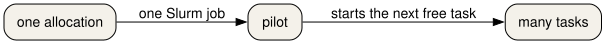
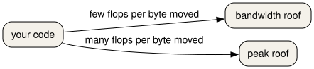

All in One View
Content from What a supercomputer is
Last updated on 2026-10-26 | Edit this page
Estimated time: 45 minutes
Overview
Questions
- What is different about a supercomputer and the computer on your desk?
- How do you log in to Snellius, and how is the course cluster different?
Objectives
- Describe a supercomputer as a login node, a scheduler, and compute nodes.
- Identify a login hostname and a compute hostname from a written example.
- Connect to Snellius with SSH after the SURF user portal step.
- Connect to the course cluster with the address in your welcome note.
- Predict what a long computation does to a shared login node.
A room of computers, with a door
A supercomputer is not a bigger laptop. It is many computers in one room. They share a door, a queue, and file systems. You talk to the door. A scheduler decides when your work may run on a computer in the room.
You will meet three roles.
- The login node is the door. You reach it with SSH, or with a web shell. It is shared with everyone else who is logged in. It is the right place to edit a script, look at a small file, and submit a job. It is the wrong place to run the job.
- The scheduler is the queue. On Snellius and on the course cluster the scheduler is Slurm. You describe the resources you need. Slurm starts the work when those resources are free.
- A compute node is where the work runs. You do not SSH there for a normal batch job. Slurm starts your script on that node and writes the text output to a file.

Snellius
Snellius is the Dutch national supercomputer, operated by SURF. The public description is at https://www.surf.nl/en/services/compute/snellius-the-national-supercomputer. Before the first SSH login you sign in to the SURF user portal, CUA. The account email comes from SURF and names your login.
From your own computer:
Your prompt is on a login node. It looks like
YOUR_LOGIN@int4:~$. The int names are login
nodes. A compute node has a different name. If the network you are on is
not trusted, SURF documents a separate door node in the service desk.
Use that host when the welcome mail tells you to.
You can also work in a browser through Open OnDemand. That page gives you a shell, a file manager, and a few applications. The shell is still a login node.
A password prompt on the login node is normal. A job does not start because you logged in. Logging in only gives you the door.
The course cluster
This course also uses a small cluster built from SURF Research Cloud workspaces. The template is Magic Castle: https://github.com/ComputeCanada/magic_castle. Your trainer sends a setup link. That link creates your password. There is one login node, and there is no CUA account.
MANAGER is the address in the welcome note. It is not
snellius.surf.nl. The nodes have two cores each, with more
cores on the GPU node. Ethernet stands in for the fast network Snellius
uses. The partition names rome and thin_course
point at the same CPU nodes. The gpu partition holds the
GPU cards.
There is no project budget on the course cluster.
accinfo is not installed. sacct still reports
core-seconds in CPUTimeRAW. On Snellius your project does
have a budget, counted in system billing units. You do not need the
budget command for the exercises in this lesson.
A faded login
Fill the blank for the machine you are actually using.
On Snellius the host is snellius.surf.nl and the name is
your CUA login. On the course cluster both values come from the welcome
note.
The sample SSH config in
episodes/files/ssh-config-sample is the Snellius shape:
Predict the hostname
You are about to run hostname after logging in. Write
down what you think the name will start with, before you run it.
On Snellius, which of these is a login node: int4, or
tcn123?
int4 is a login node. Names that start with
int are the shared door. A name like tcn123 is
a compute node. You should see an int name when you run
hostname on Snellius just after SSH. On the course cluster
there is one login node, and its name is the one in your welcome note,
not an int name.
It reads HostName from
episodes/files/ssh-config-sample and exits with an error if
that value is not snellius.surf.nl. A course-cluster
address belongs in a different Host block, not in this
one.
On Snellius, hostname starts with int and
sinfo -s lists partitions such as rome and
genoa. On the course cluster, sinfo -s shows
the small partitions, including thin_course or
rome. who shows other people on the login
node. That is the reminder: the door is shared.
The container prints its own hostname. That name is the container,
not a SURF node. You use it for the software exercises, not as a
substitute for sinfo.
What you do next
You have a shell on a shared door. The next episode loads the software you will run. The episode after that sends the work through Slurm so it does not stay on this door.
- A supercomputer is a login node, a scheduler, and compute nodes.
-
ssh YOUR_LOGIN@snellius.surf.nlreaches Snellius after you have a CUA account. - The course cluster is a Magic Castle workspace. Its address is in your welcome note.
-
hostnameon a Snellius login node starts withint. - A long computation does not belong on the login node.
Content from Software from a shared stack
Last updated on 2026-10-26 | Edit this page
Estimated time: 50 minutes
Overview
Questions
- Why do you load software instead of installing it into your home directory?
- How do you get the same Python on the cluster and in a container?
Objectives
- Explain why a shared software stack is easier to support than a private install.
- Source the EESSI 2025.06 init script and read the CPU target it prints.
- Use
module avail,module spider, andmodule loadto select a program. - Name the site command
module load 2025and the portable init script it stands in for on the course cluster. - Point to the EasyBuild book when the question is how a module was built, and stop there.
One copy, many people
If every person compiles their own Python, the cluster fills up with almost the same files, and nobody can say which one a paper used. A shared stack is one curated set of builds. You select a build by loading a module. The files stay on a shared file system. Your home directory stays for your own scripts and small inputs.
EESSI is that kind of stack, distributed with CVMFS. CVMFS shows a
directory tree that is the same on every machine that mounts it, and it
fetches a file when you first use it. The tree for this lesson is
/cvmfs/software.eessi.io.

How those builds are produced is a different course. EasyBuild is the tool that turns a recipe into the module you load. Read that story in the book at https://hpceb.rgoswami.me/ and in the sources at https://github.com/HaoZeke/what-easybuild-is-doing. This episode only uses the result.
Start the stack
On any machine where the repository is mounted, including the EESSI client container:
The script loads the EESSI/2025.06 module and prints
three kinds of lines: that the module loaded, which CPU target it
selected, and whether it saw a GPU. The CPU line depends on the machine.
On one Intel Sapphire Rapids host it was:
Module for EESSI/2025.06 loaded successfully
EESSI has selected x86_64/intel/sapphirerapids as the compatible CPU target for EESSI/2025.06
EESSI did not identify an accelerator on the systemYour line may name a different CPU. Read the line. Do not copy a path from someone else's CPU into your script. The init script picks the path for you.
Two variables are stable:
They print 2025.06 and
/cvmfs/software.eessi.io.
The previous stack is still there. After module purge,
module load EESSI/2023.06 switches to it. You can also
source
/cvmfs/software.eessi.io/versions/2023.06/init/lmod/bash in
a new shell. Do not load both stacks in one shell. Purge first.
On the course cluster you do not have to source that file by hand.
module load 2025 loads EESSI 2025.06. The names
2024 and foss/2023a load that same stack on
the course cluster, so older scripts keep working. On Snellius,
module load 2025 is how you select the 2025 site stack.
Prefer the explicit init script when you are in the container, because
the container does not define the site name 2025.
QCG-PilotJob is not part of EESSI 2025.06.
module spider QCG-PilotJob reports that it cannot find it.
The cluster installs it as a site module, loaded after
module load 2024. That is the next episode but one. Do not
spend this episode searching the EESSI tree for it.
Find a Python and load it
module avail prints a long list.
module spider Python searches it. In EESSI 2025.06 the
Python modules include:
Python/3.12.3-GCCcore-13.3.0Python/3.13.1-GCCcore-14.2.0-
Python/3.13.5-GCCcore-14.3.0(the default)
In EESSI 2023.06 one of the modules is
Python/3.11.5-GCCcore-13.2.0.
Load the 2025.06 default, then ask Python where it lives:
python3 --version prints Python 3.13.5. The
prefix is under /cvmfs/software.eessi.io/versions/2025.06/.
The CPU directory in the middle of that path is the one the init script
chose.
module list shows what is loaded.
module purge unloads it. ml is the short form
of module once the init script has run.
A faded load
BASH
source /cvmfs/software.eessi.io/versions/________/init/lmod/bash
module load Python/________
python3 --versionFor this course the version is 2025.06 and the module is
Python/3.13.5-GCCcore-14.3.0.
Predict the version string
Write down what you expect the next block to print. Then run it. On a
cluster, run it in a shell where you have sourced the init script, or
where module load 2025 has already set the stack up. In the
container, the check below runs the same questions for you.
What is EESSI_VERSION after the 2025.06 init? What
Python version do you get from
Python/3.13.5-GCCcore-14.3.0? After a purge and
module load EESSI/2023.06, what version does
Python/3.11.5-GCCcore-13.2.0 report?
BASH
# runner: eessi
set +u
source /cvmfs/software.eessi.io/versions/2025.06/init/lmod/bash >/dev/null
set -u
printf '%s\n' "$EESSI_VERSION"
printf '%s\n' "$EESSI_CVMFS_REPO"
module load Python/3.13.5-GCCcore-14.3.0
python3 -c 'import sys; print(sys.version.split()[0]); prefix=sys.prefix; print("eessi-prefix" if prefix.startswith("/cvmfs/software.eessi.io/versions/2025.06/") else "unexpected")'
module purge >/dev/null
module load EESSI/2023.06 >/dev/null
module load Python/3.11.5-GCCcore-13.2.0
python3 -c 'import sys; print(sys.version.split()[0])'eessi-prefix means the prefix started with the 2025.06
tree. The CPU directory is allowed to differ. set +u lets
the init script read a variable that may be unset, and
set -u turns that check back on.
Load Python on the cluster
On the course cluster:
BASH
module purge
module load 2025
module spider Python
module load Python/3.13.5-GCCcore-14.3.0
python3 --version
which python3On Snellius, module load 2025 selects the site 2025
stack. If Python/3.13.5-GCCcore-14.3.0 is not the name
there, trust module spider Python and load the newest 3.13
it offers. Write the full module name in your notes.
If /cvmfs/software.eessi.io is missing, use the
container path from the setup page and run the block in the solution
above.
python3 --version prints Python 3.13.5 when
that module exists. which python3 prints a path under the
stack, not under /usr/bin. If the site stack uses a
different build, the version string changes and that is the number you
record. Mixing a site module load with a second
source of the init script in the same shell is how two
Pythons end up on PATH. Purge first.
- A shared stack means one supported copy of a program, selected with a module.
-
source /cvmfs/software.eessi.io/versions/2025.06/init/lmod/bashprepares EESSI 2025.06. -
module spidersearches.module loadselects.module purgeclears the selection. - On the course cluster,
module load 2025is the site name for EESSI 2025.06. - EasyBuild, and how a module file is produced, is the book at https://hpceb.rgoswami.me/.
Content from Submitting a job
Last updated on 2026-10-26 | Edit this page
Estimated time: 60 minutes
Overview
Questions
- How do you ask Slurm for time and cores without starting the work on the login node?
- What does a job array change, compared with four separate scripts?
Objectives
- Write a batch script with a job name, a partition, a core count, a time limit, and an output file.
- Explain why Snellius rounds a small request up to 16 cores on the
romepartition. - Submit a script with
sbatchand read its state withsqueue. - Use
SLURM_ARRAY_TASK_IDto give each array task a different input. - Cancel a job you submitted by mistake with
scancel.
The script is the request
A batch script is a shell script with a header of
#SBATCH lines. Slurm reads the header. The shell runs the
rest, on a compute node, after the wait.
This is the Snellius shape. The file in the lesson is
episodes/files/pi-snellius.sh.
BASH
#!/bin/bash
#SBATCH --job-name=pi-one
#SBATCH --partition=rome
#SBATCH --cpus-per-task=16
#SBATCH --time=00:15:00
#SBATCH --output=pi-%j.out
module purge
module load 2025
export SAMPLE_COUNT=1000
python3 pi_one.py%j in the output name becomes the job id.
pi_one.py prints one line, samples=1000 hits…
estimate=…=. It uses a fixed random sequence, so the same
SAMPLE_COUNT always prints the same line. The program is in
episodes/files/pi_one.py.
On Snellius the rome partition gives memory with the
cores, and the smallest slice is 16 cores. A request for 1 core is
rounded up to 16, and the project is charged for 16. Asking for 16 in
the script matches what you will be charged.
On the course cluster the same nodes answer to rome and
to thin_course, and a node has two cores. Ask for one core
there. episodes/files/pi-course.sh is that script:
--partition=thin_course and
--cpus-per-task=1.
Submit from the directory that contains pi_one.py:
sbatch prints Submitted batch job and a
number. squeue shows PD while the job waits
and R while it runs. When it leaves the queue, read
pi-<jobid>.out.
srun can start a step inside a job, or a short
interactive allocation. sbatch is the command for a script
you can resubmit. This lesson uses sbatch.
The directives you will see most often are in
episodes/files/slurm-directives.tsv. The same rows are
below.
| directive | meaning | example | where |
|---|---|---|---|
| –job-name | a short name in the queue | pi-one | any Slurm cluster |
| –partition | which group of nodes | rome | Snellius and the course cluster |
| –cpus-per-task | cores for the one task | 16 | Snellius rome slice |
| –time | wall clock limit | 00:15:00 | any Slurm cluster |
| –output | file for the job text | pi-%j.out | any Slurm cluster |
| –array | one index per task | 0-3 | any Slurm cluster |
While you wait
A job in PD is waiting for resources.
squeue -u "$USER" is enough during class.
scancel JOBID removes a job you do not want. On Snellius,
scontrol show job JOBID tells you why a job is still
waiting. On the course cluster the reason is usually that someone else
holds the two cores.
Do not resubmit because the first job is still PD. You
will get two jobs, and then four.
Four lengths, one script
A job array runs the same script many times.
SLURM_ARRAY_TASK_ID is 0, 1, 2, or 3 when you ask for
--array=0-3. %A is the array id and
%a is the task id, so each task gets its own output
file.
episodes/files/pi-array.sh:
BASH
#!/bin/bash
#SBATCH --job-name=pi-array
#SBATCH --partition=thin_course
#SBATCH --cpus-per-task=1
#SBATCH --time=00:10:00
#SBATCH --array=0-3
#SBATCH --output=pi-%A_%a.out
module purge
module load 2025
sizes=(1000 2000 4000 8000)
export SAMPLE_COUNT="${sizes[$SLURM_ARRAY_TASK_ID]}"
python3 pi_one.pyA faded header
BASH
#SBATCH --job-name=________
#SBATCH --partition=________
#SBATCH --cpus-per-task=________
#SBATCH --time=________On the course cluster the partition is thin_course or
rome, and the core count is 1 for this
program. On Snellius rome the core count for this lesson is
16.
Predict the array index
sizes has four numbers: 1000, 2000, 4000, 8000. The
header says --array=0-3. Which SAMPLE_COUNT
does task 2 export? Write the number before you look at the
solution.
Task 2 exports 4000. The index starts at 0, so task 0 is 1000, task 1
is 2000, task 2 is 4000, and task 3 is 8000. The output file for task 2
is pi-<arrayid>_2.out.
Check the batch script
From the lesson directory:
Then, if you are on the course cluster, submit the one-core script
and the array. Copy pi_one.py into the directory you submit
from, or submit from episodes/files.
The check runs bash -n on pi-snellius.sh
and requires the five directives plus module load 2025. A
missing --time line makes it exit with an error.
After sbatch, squeue shows one job and an
array. When they finish, pi-<jobid>.out contains one
samples=1000 line. The array writes four files. Task 0
prints samples=1000. You can also run
SAMPLE_COUNT=1000 python3 pi_one.py on the login node for
this tiny count if the queue is busy. 1000 samples is a login-node-sized
test. The array sizes above 1000 belong in the job.
- A batch script is a shell script plus
#SBATCHresource lines. -
sbatchsubmits.squeueshows the wait.scancelremoves a job. - On Snellius
rome, ask for 16 cores because smaller requests are rounded up. - On the course cluster, ask for 1 core on
thin_courseorrome. -
SLURM_ARRAY_TASK_IDselects the input for one task in an array.
Content from Files and moving data
Last updated on 2026-10-26 | Edit this page
Estimated time: 50 minutes
Overview
Questions
- Which directory is for a running job, and which one is for a file you still need next month?
- Why does a directory of tiny files travel badly?
Objectives
- Choose
home,scratch-shared,scratch-local,scratch-node,projects, orarchivefor a file on Snellius. - Name the three course-cluster mounts and the one that is not shared.
- Pack a directory of small files with
tarbefore you copy it. - Copy with
rsync -avPand check the archive withsha256sum -c. - State what
dcpanddsyncare for, after the small-file case is already packed.
Six places on Snellius
A file's path decides how fast it is, who can read it, and when it disappears.
Home holds 200 GiB. An unused file on scratch-shared is removed after
14 days. Scratch-local keeps a file for 6 days. The class table is
episodes/files/filesystems.tsv.
| place | mount | backup | lifetime | quota |
|---|---|---|---|---|
| home | /home/LOGIN |
nightly | 15 weeks after the project ends | 200 GiB |
| scratch-shared | /scratch-shared/ |
none | 14 days | 8 TiB across scratch areas |
| scratch-local | /scratch-local/ |
none | 6 days | counted in the scratch quota |
| scratch-node | /scratch-node/ |
none | deleted when the job ends | the node disk |
| project | /projects/NAME |
none | the project | by request |
| archive | /archive/ |
nightly | the project | by request |

On the course cluster you have three mounts, not six.
/home is the shared home file system. /project
is large shared scratch, and it is not the same path as Snellius
/projects. /scratch is the local disk on that
machine. It is not shared with the other nodes. There is no tape
archive.
A file written to /scratch on the course login node is
not visible on a compute node. A file written to $TMPDIR on
Snellius disappears when the job ends. Copy results to
/home or /project before the job exits.
Pack, then copy
Fifty single-line files are a bad transfer. Each file is a separate
metadata operation. tar turns them into one file.
rsync -avP copies that file and can continue if the
connection drops. -a keeps timestamps and permissions,
-v lists files, and -P shows progress and
keeps a partial file.
From the machine that has the files, towards the cluster:
On the course cluster the destination is
YOUR_LOGIN@MANAGER:/project/$USER/. Create the directory on
the remote side first if it does not exist.
Then check the bytes. On the source:
Copy the .sha256 file the same way, and on the
destination:
A good check prints the file name and OK.
sha256sum and rsync in this lesson are the
ones on the machine, not an EESSI module.
command -v sha256sum and command -v rsync
should print a path. tar is the system
tar.
When the copy itself is the large job
mpiFileUtils provides dcp,
dsync, and dwalk for copies that need many
nodes. You do not need them for many.tar. You need them
when the tree is huge and a single rsync would take the
whole day. dcp copies. dsync updates a
destination to match a source. dwalk lists a tree in
parallel so you can see what you have.
The module name is site-specific. On the course cluster,
module load 2025 and then
module spider mpiFileUtils. Load the name
spider prints. Do not invent a version. If the spider
search is empty, the tool is not on that stack, and rsync
remains the tool for this lesson's files.
A faded destination
Snellius shared scratch for your user is
YOUR_LOGIN@snellius.surf.nl:/scratch-shared/$USER/. The
course cluster uses /project/$USER/ on
MANAGER.
Predict the surviving file
A job on Snellius writes result.txt into
$TMPDIR and also copies it to
/scratch-shared/$USER/result.txt. The job ends. Which copy
can you still open from the login node the same afternoon, and which
copy is already gone?
/scratch-shared/$USER/result.txt is still there that
afternoon. The $TMPDIR copy lived on the node-local NVMe
and was removed at the end of the job. Two weeks later the scratch copy
can also be gone if nobody has used it. A file you still need next month
belongs on /projects or /archive, not on
scratch.
Pack fifty files and check the sum
The script creates fifty small files, packs them with
tar, and runs sha256sum -c.
packed=50 means the archive contains fifty members.
checksum=ok means the digest matched. If the digest does
not match, copy the archive again. Do not unpack a file that failed the
check and then try to debug the contents.
- On Snellius, home is small and persistent, scratch is large and
temporary, and
$TMPDIRdies with the job. - On the course cluster,
/projectis the shared large disk and/scratchis local to one machine. - Pack many small files with
tarbefore you transfer them. -
rsync -avPcopies the archive.sha256sum -cchecks it. -
dcpanddsyncare for a tree that is already too big for onersync.
Content from Many small tasks
Last updated on 2026-10-26 | Edit this page
Estimated time: 50 minutes
Overview
Questions
- Why is one Slurm job per tiny task a poor plan?
- What does a pilot job keep hold of, while it runs the tasks?
Objectives
- Explain the cost of submitting thousands of separate Slurm jobs.
- Run three tasks inside one QCG-PilotJob
LocalManageron the course stack. - Describe a HyperQueue server as a process that fills one Slurm allocation with tasks.
- Read a three-rule Snakemake file as a graph of files, not as a queue.
- Say what FireWorks adds when tasks must be tracked in a database.
The queue is not free
A one-second task with its own sbatch still waits in the
queue, still writes a job record, and still starts a shell. A few
thousand of those tasks can spend more time starting than working. A job
array, from the Slurm episode, is the first improvement: one submission,
many tasks, and Slurm still tracks each task.
A pilot job goes further. You ask Slurm for a block of cores once. A small manager sits inside that allocation and starts the short tasks itself. The queue saw one job.

QCG-PilotJob on the course cluster
QCG-PilotJob is the pilot manager this course installs. It is a site
module. It is not in the EESSI stack.
module spider QCG-PilotJob inside EESSI 2025.06 says it
cannot be found, and that is expected.
On the course cluster:
BASH
module purge
module load 2024
module load QCG-PilotJob
python3 episodes/files/exercises/qcg-three.pymodule load 2024 is the course alias for EESSI 2025.06.
Load it before QCG-PilotJob. The script submits three tasks
that each run printf, waits until they finish, and
prints:
qcg-finished
task-0The Python is short. A LocalManager runs the tasks on
the machine where you started it. Jobs collects the
descriptions. Each task asks for exactly one core.
PYTHON
manager = LocalManager()
jobs = Jobs()
jobs.add(name="job_0", exec="/usr/bin/printf", args=["task-0\\n"],
stdout="out_0.txt", numCores={"exact": 1})
manager.submit(jobs)
manager.wait4all()
manager.finish()On a cluster you normally put that manager inside one
sbatch script, so the cores come from the allocation
instead of from the login node. For three printf tasks the
login node is an acceptable place to see the tool work. A real parameter
sweep belongs in the job.
qcg-pilotjob --help-h prints the command-line help if
you want the non-Python entry point. The exercises use the Python API
because that is what the course stack is there to support.
If module load QCG-PilotJob fails, you are probably on
the EESSI container or on a machine without the site module. Skip the
run. The HyperQueue and Snakemake sections are still readable, and the
QCG script is still in the lesson files for later.
HyperQueue
HyperQueue is the tool to reach for when the pilot should be a small
server plus workers, and the workers are Slurm jobs. You start
hq server start, you submit tasks to that server, and
hq alloc add slurm asks Slurm for workers. The server fills
the workers. You do not write one batch script per task.
The idea you should keep: the Slurm job is the bucket of resources. HyperQueue is who pours tasks into the bucket. You do not need to memorise every flag today.
Snakemake
Snakemake starts from files. A rule names an output, the inputs it needs, and the command that builds the output. Snakemake runs a rule when the output is missing or older than the input. Three rules that feed each other are a pipeline:
PYTHON
rule all:
input: "summary.txt"
rule step_one:
output: "part.txt"
shell: "printf 'part\\n' > part.txt"
rule summary:
input: "part.txt"
output: "summary.txt"
shell: "cp part.txt summary.txt"That is a different question from QCG. QCG asks how to run many copies of a command. Snakemake asks which files are out of date. People combine them: Snakemake decides the graph, and a cluster profile or a pilot runs the commands.
FireWorks
FireWorks stores tasks in a database, with dependencies, and workers
pull the tasks. You use it when many people submit tasks, when a task
must be retried, or when you need a record of what ran. It is more
machinery than a three-task LocalManager. If your whole
problem is "run this command on these fifty inputs today", stay with the
array or with QCG.
Which tool answers which question
| Tool | When you reach for it |
|---|---|
| QCG-PilotJob | a Python script should launch tasks inside one allocation |
| HyperQueue | a small server should fill Slurm workers |
| Snakemake | the work is a graph of files |
| Slurm array | every task is the same batch script with a different index |
| FireWorks | tasks must be stored and shared through a database |
A faded load
On the course cluster the two names are 2024 and
QCG-PilotJob, in that order.
Predict the printed line
qcg-three.py runs three tasks. The last two lines of the
program print a fixed word and then the contents of
out_0.txt. What are those two lines?
qcg-finished
task-0Task 0 writes task-0 into out_0.txt. The
other two tasks write out_1.txt and out_2.txt.
The script only prints the first file, so you do not see
task-1 in the program output.
Run the three tasks
A successful run ends with qcg-finished and
task-0. The working directory is a temporary directory the
script creates, so you will not see out_0.txt in the lesson
tree afterwards. The three task names inside the script are
job_0, job_1, and job_2.
If Python says No module named qcg, the site module is
not loaded. module purge and then
module load 2024 before
module load QCG-PilotJob is the sequence that works on the
course cluster.
- Thousands of one-task Slurm jobs spend their time starting, not working.
- A pilot job holds one allocation and starts the short tasks inside it.
- On the course cluster,
module load 2024and thenmodule load QCG-PilotJob. - QCG-PilotJob is not an EESSI module.
module spiderinside EESSI will not find it. - HyperQueue fills a Slurm allocation, Snakemake tracks files, and FireWorks tracks tasks in a database.
Content from Timing and scaling
Last updated on 2026-10-26 | Edit this page
Estimated time: 45 minutes
Overview
Questions
- What does a single timing tell you, and what does it fail to tell you?
- When does adding cores stop helping?
Objectives
- Time a command with
time -pand read therealline as wall-clock seconds. - Compute speedup and parallel efficiency from a table of timings.
- Separate a strong-scaling study from a weak-scaling study.
- Give one reason an efficiency of 1.0 is rare.
- Place a kernel on a roofline as limited by arithmetic or limited by memory movement.
Wall-clock time
time -p is the POSIX form. It prints three lines to
standard error: real, user, and
sys. real is the elapsed time you waited.
user and sys add up CPU time, which can be
larger than real when several cores run at once.
Set SAMPLE_COUNT if you want a longer run. The
real line is the one to write in a table. A single
measurement is noisy. For a number you will compare, run the same
command three times and keep the middle real value. This
lesson's table is already collected that way, so the exercises use the
table instead of asking you to produce a stable benchmark during
class.
On the EESSI client the same time -p works, because it
is a shell keyword or a system command, not a module.
Strong and weak scaling
Strong scaling keeps the problem the same size and adds cores. The
hope is that the same work finishes sooner. Speedup is
T(1) / T(N). Parallel efficiency is
T(1) / (N * T(N)). An efficiency of 1.0 would mean every
new core pulled its full weight. Communication, startup, and parts of
the program that do not parallelise pull the number down.
Weak scaling grows the problem with the cores, so each core keeps the same amount of work. The hope is that the time stays about the same. A weather model on a larger region is often a weak-scaling question. A fixed video frame is often a strong-scaling question.
These timings are the worked strong-scaling series in
episodes/files/timings.csv. The problem size stays fixed.
The efficiencies are 1.000, 0.909, 0.800, and 0.625.
| Cores | Seconds | Speedup | Efficiency |
|---|---|---|---|
| 1 | 8.0 | 1.000 | 1.000 |
| 2 | 4.4 | 1.818 | 0.909 |
| 4 | 2.5 | 3.200 | 0.800 |
| 8 | 1.6 | 5.000 | 0.625 |
Eight cores finish in 1.6 seconds instead of 8.0. The speedup is 5, not 8. The efficiency is 0.625. Those last cores still helped, and they helped less than the first ones.
A faster real time with poor efficiency can still be the
right choice when the queue gives you the cores and the person is
waiting for the result. Efficiency tells you how much of the machine you
used. It does not, by itself, tell you to use fewer cores.
A roofline, in one picture
Two ceilings show up once the program is already parallel. The figure names them the bandwidth roof and the peak roof. Your code sits under one of them.
The peak roof is how fast the cores can do arithmetic. If the kernel does a lot of arithmetic on each byte it reads, it can reach that roof.
The bandwidth roof is how fast bytes move. If the kernel does little arithmetic per byte, it hits that slope first. Adding cores does not help a kernel that is already waiting on memory, until you also give it more memory bandwidth.
Arithmetic intensity is arithmetic per byte moved. A low intensity sits under the bandwidth roof. A high intensity sits under the peak roof. You do not need a profiler to use the picture. You need it so that "use more cores" is not your only idea.

A faded efficiency
efficiency = ________ / (cores * ________)The first blank is the one-core time. The second is the time at that core count.
Predict the eight-core efficiency
The table says 8.0 seconds on one core and 1.6 seconds on eight. What
is 8.0 / (8 * 1.6)? Write the decimal before you run the
checker.
real is the wall-clock time. user and
sys are CPU time. Two runs of a 1000-sample estimate often
differ in the hundredths, because the machine is doing other work. That
is why a comparison uses a repeated measurement, or a table collected
under the same conditions, rather than one lucky run. The
pi_one.py estimate line itself does not change between
runs. Only the timing does.
-
time -pprintsreal,user, andsys.realis the time you waited. - Strong scaling fixes the problem size. Weak scaling grows it with the cores.
- Efficiency is
T(1) / (N * T(N)). The sample eight-core efficiency is 0.625. - A roofline separates a kernel limited by arithmetic from one limited by memory movement.
- Compare timings of the same work. One noisy run is a weak basis for a claim.